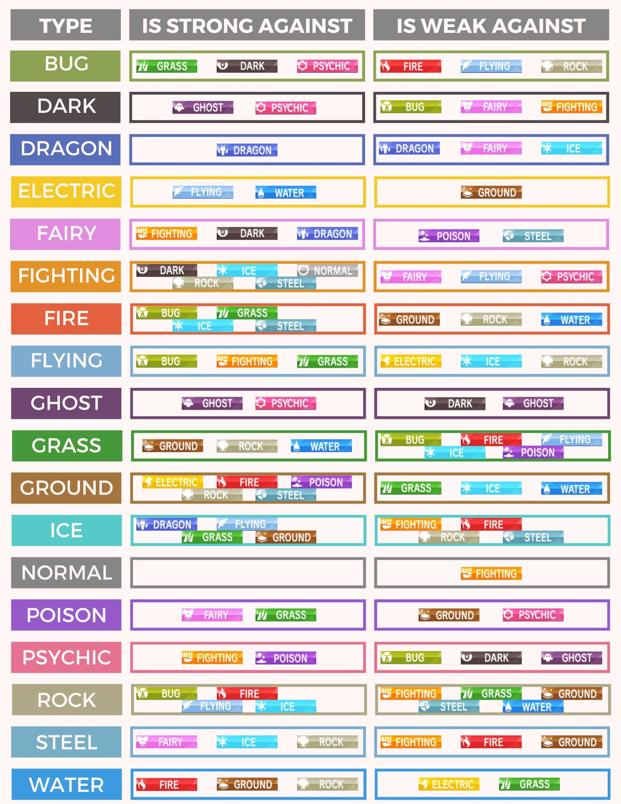
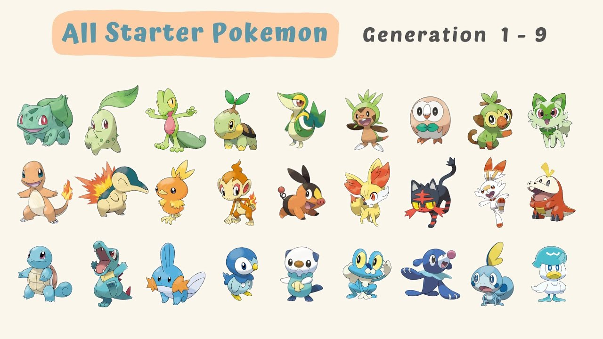

Pokémon Species: Exploring the World of Pokémon
With over 1,000 Pokémon species introduced across different generations, the Pokémon world is full of unique creatures, each with distinct types, abilities, and evolutions. This page explores the diversity of Pokémon species, how they are categorized, and what makes them special.
Pokémon Categories
Pokémon can be grouped based on various attributes, such as their types, evolution stages, and rarity.
Pokémon by Type
Pokémon are divided into 18 elemental types, which influence their strengths and weaknesses in battles. Here’s a look at each type with examples:
Each type also interacts uniquely in battle, creating a strategic rock-paper-scissors mechanic.
Legendary & Mythical Pokémon
Some Pokémon are exceptionally rare and have powerful abilities. These are divided into:
- Legendary Pokémon – Powerful Pokémon that are usually found in single encounters within the game’s storyline. Examples:
- Mewtwo (Psychic, Kanto)
- Rayquaza (Dragon/Flying, Hoenn)
- Zacian & Zamazenta (Fighting/Steel, Galar)
- Mythical Pokémon – Even rarer than Legendary Pokémon, often obtained through special events. Examples:
- Mew (Psychic, Kanto)
- Celebi (Psychic/Grass, Johto)
- Arceus (Normal, Sinnoh – known as the "God of Pokémon")
Starter Pokémon
Each main-series Pokémon game begins with a choice of one of three Starter Pokémon, each representing Fire, Water, or Grass types.
Evolution Stages
Many Pokémon evolve into stronger forms, either by leveling up, using items, or trading.
- Basic Stage – The first form of a Pokémon (e.g., Pichu, Charmander).
- First Evolution – Evolves from the basic stage (e.g., Pikachu, Charmeleon).
- Final Evolution – The fully evolved form (e.g., Raichu, Charizard).
Special Evolutions:
- Stone Evolutions – Some Pokémon evolve using special stones (e.g., Eevee → Vaporeon with a Water Stone).
- Trade Evolutions – Certain Pokémon evolve when traded (e.g., Machoke → Machamp).
- Friendship Evolutions – Some evolve when they reach a high friendship level (e.g., Togepi → Togetic).
Regional Variants
Some Pokémon adapt to different environments, resulting in regional forms with different types and appearances. Examples:
- Alolan Vulpix (Ice-type) vs. Kantonian Vulpix (Fire-type)
- Galarian Zigzagoon (Dark/Normal) vs. Hoenn Zigzagoon (Normal)
Most Popular Pokémon by Fan Vote
Some Pokémon have become iconic due to their role in the anime, games, or trading card game. Here are some fan-favorite Pokémon:
Top 5 Most Popular Pokémon (Based on Polls)
- Pikachu ⚡ – The mascot of Pokémon, recognized worldwide.
- Charizard 🔥 – A fan-favorite Fire-type with a powerful Mega Evolution.
- Lucario 🥋 – A Fighting/Steel-type known for its aura-sensing abilities.
- Garchomp 🐉 – A powerful Dragon-type frequently used in competitive play.
- Greninja 🌀 – A Water/Dark ninja-like Pokémon that became famous in the anime.
Unique and Rare Pokémon Species
While some Pokémon are common, others are extremely rare and highly sought after.
- Shiny Pokémon – These Pokémon have an alternate color scheme and are very rare, appearing once in every 1/4,096 encounters.
- Pseudo-Legendaries – Strong non-Legendary Pokémon with high stats, like Dragonite, Salamence, and Metagross.
- Ultra Beasts – Mysterious alien-like Pokémon introduced in Pokémon Sun & Moon, such as Nihilego and Guzzlord.
Pokémon Biology & Lore
Many Pokémon are inspired by real-world animals, myths, and folklore.
- Inspiration from Animals:
- Bulbasaur 🦎 – Resembles a frog with a plant growing on its back.
- Arcanine 🐕 – Based on a legendary lion/dog hybrid.
- Mythology & Folklore:
- Ninetales 🔥 – Inspired by the Japanese kitsune (nine-tailed fox).
- Gyarados 🐉 – Inspired by the legend of a carp turning into a dragon.
- Science & Technology Pokémon:
- Porygon 🖥️ – A Pokémon made entirely from computer data.
- Genesect 🔫 – A prehistoric Pokémon revived and enhanced by technology.
Wanna learn more visit this site!
RotomlabsThe Future of Pokémon Species
With each new game, Pokémon designs continue to evolve. As Pokémon Scarlet & Violet introduced Paradox Pokémon, we may see even more creative species in the future, possibly inspired by cybernetic creatures, ancient fossils, or new legendary beings.